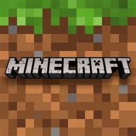
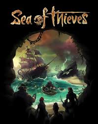

Mijn hobby's zijn vooral sporten en gamen. Ik doe aan fitness 3x per week
Welkom bij DeMIX Fitness & Leefstijl Almere Toonaangevend en trendsettend in Almere sinds 2008. 3300 m2 sport en wellness onder één dak maken DeMIX bijzonder. Wil jij sporten of ontspannen bij de meest veelzijdige club in de omgeving. Dan ben je bij DeMIX Fitness & Leefstijl aan het juiste adres. Sinds de opening van DeMIX Fitness & Leefstijl Nieuwegein in 1997 hebben wij ons ontwikkeld tot een club met een grote verscheidenheid aan faciliteiten en diensten. Niet alleen het imposante centrum doet u verbazen, ook de ruim 80 groepslessen per week. Kwalitatief hoogstaande docenten zullen u helpen met uw doelen te halen. Hebben we u nieuwsgierig gemaakt? Kom gerust een keer langs en laat u adviseren en inspireren. Tot ziens bij DeMIX Fitness Almere. DeMIX, we add life to years!


Games die ik vaak speel zijn
Minecraft is een sandbox-game ontwikkeld door Mojang Studios. Het spel is gemaakt door Markus "Notch" Persson in de programmeertaal Java. Na verschillende vroege privé-testversies, werd het voor het eerst openbaar gemaakt in mei 2009 voordat het in november 2011 volledig werd uitgebracht, waarbij Notch aftrad en Jens "Jeb" Bergensten de ontwikkeling overnam. Minecraft is sindsdien geporteerd naar verschillende andere platforms en is de best verkochte videogame aller tijden, met meer dan 238 miljoen verkochte exemplaren en bijna 140 miljoen maandelijkse actieve gebruikers vanaf 2021. In dit spel kan men in een uitgestrekt gebied kubusvormige objecten plaatsen op een rooster. Het spel genereert automatisch een omgeving met grondstoffen, monsters, dieren, grot- en tunnelsystemen, bergformaties en meren. De speler heeft een eigen avatar, waarmee hij de omgeving actief kan aanpassen. Het spel kan op een server, met een LAN-verbinding of offline worden gespeeld; in het laatste geval door het (tegen betaling) te downloaden van de officiële website van Minecraft. In oktober 2023 werd bekendgemaakt dat er in totaal 300 miljoen exemplaren van Minecraft verkocht zijn, waarmee het de best verkochte videogame aller tijden is.
In het spel verkennen spelers een open wereld via een piratenschip. Doordat andere spelers ook op een schip varen, en hun positie wordt gedeeld via het internet, kan men andere piraten tegenkomen in het spel. Zo wordt het mogelijk om samen te werken, of om het tegen elkaar op te nemen. Volg de kaart en ga met vrienden of andere piraten op zoek naar de schatten en vecht met zeemonsters zoals de kraken of de Megalodon.
Call of Duty (CoD) is een serie van computerspellen ontwikkeld door Infinity Ward, Treyarch en Sledgehammer Games. Na het succes van het eerste spel, volgden er nog meerdere spellen. Qua gameplay lijkt de Call of Duty-serie op de Medal of Honor-serie, maar in tegenstelling tot Medal of Honor speelt de speler als soldaat van verschillende landen, zoals de Verenigde Staten, het Verenigd Koninkrijk en de Sovjet-Unie. Call of Duty 4: Modern Warfare was het eerste spel in de serie dat niet meer tijdens de Tweede Wereldoorlog afspeelt, maar in het heden. Call of Duty: Modern Warfare 3 (2023) was het laatste spel dat is gepubliceerd.